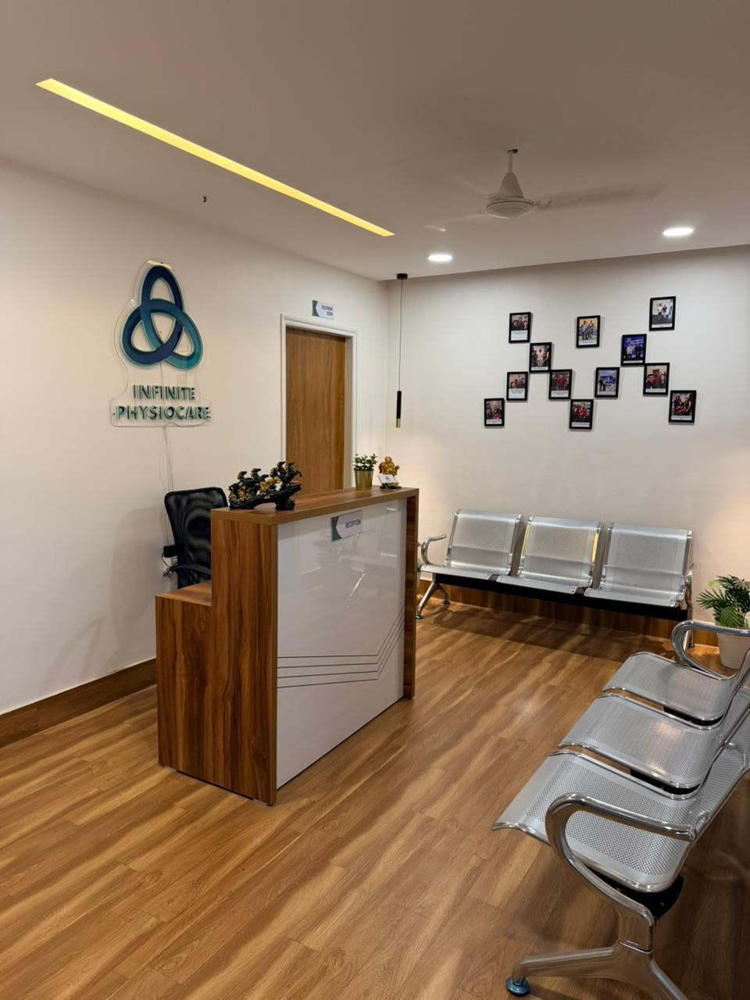
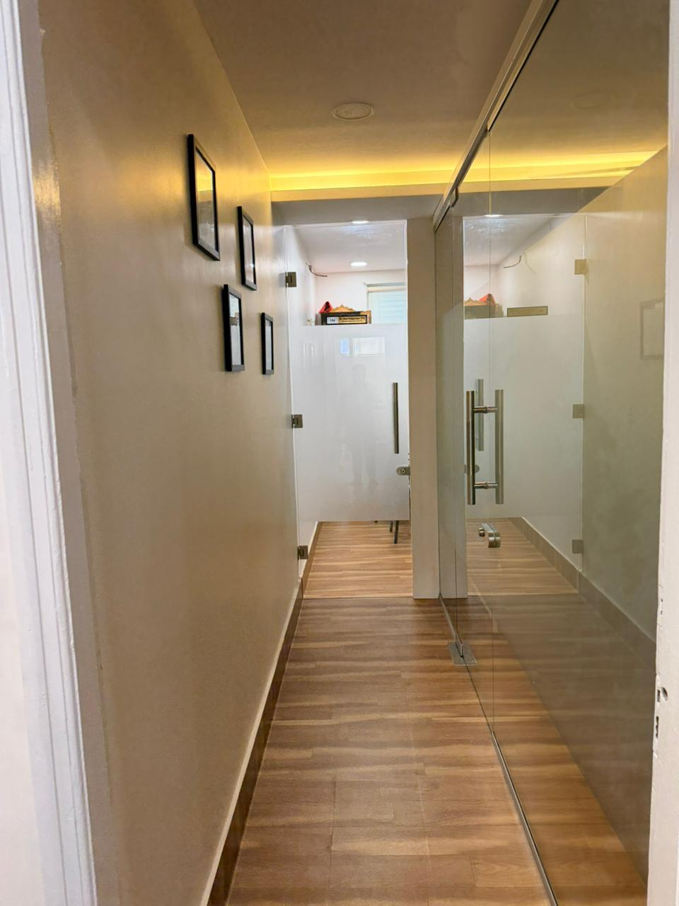
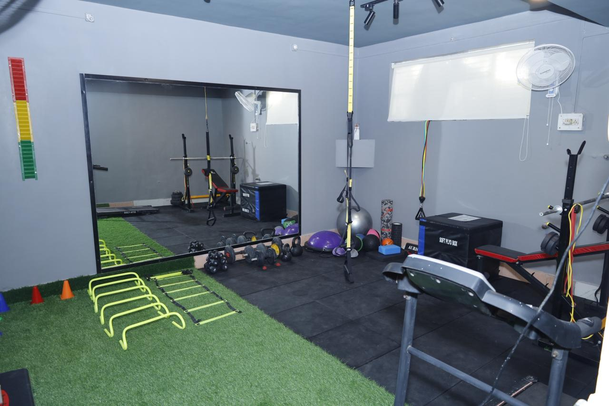
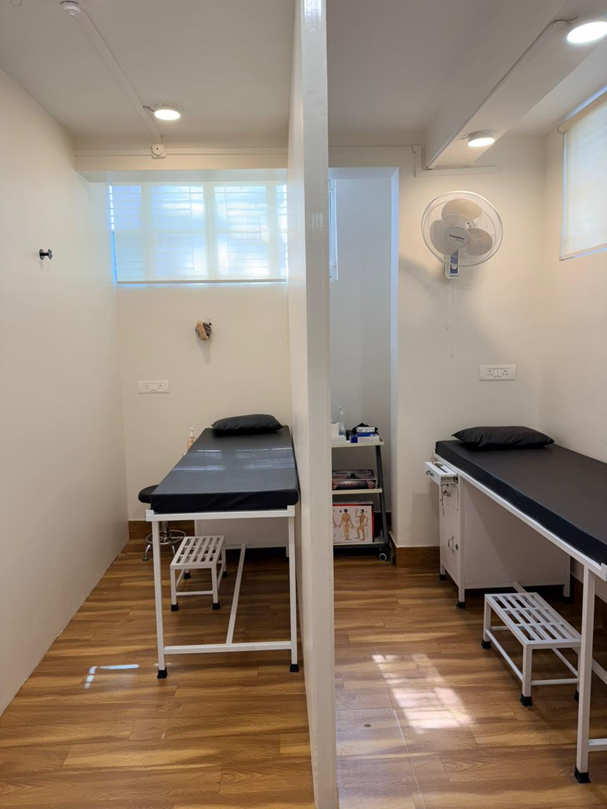
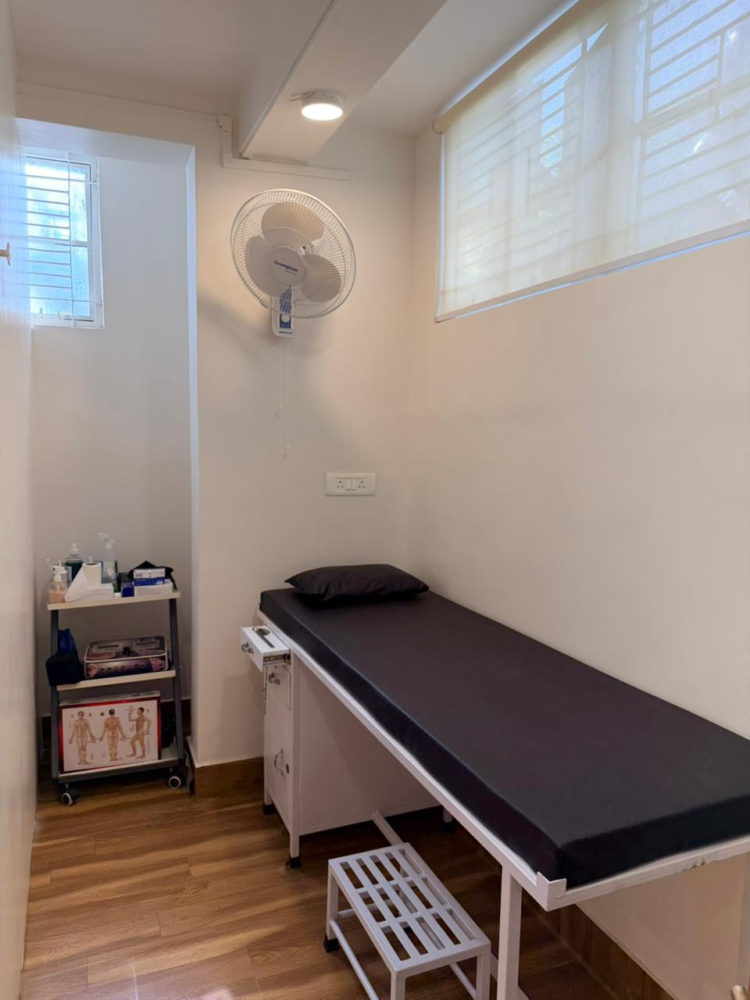
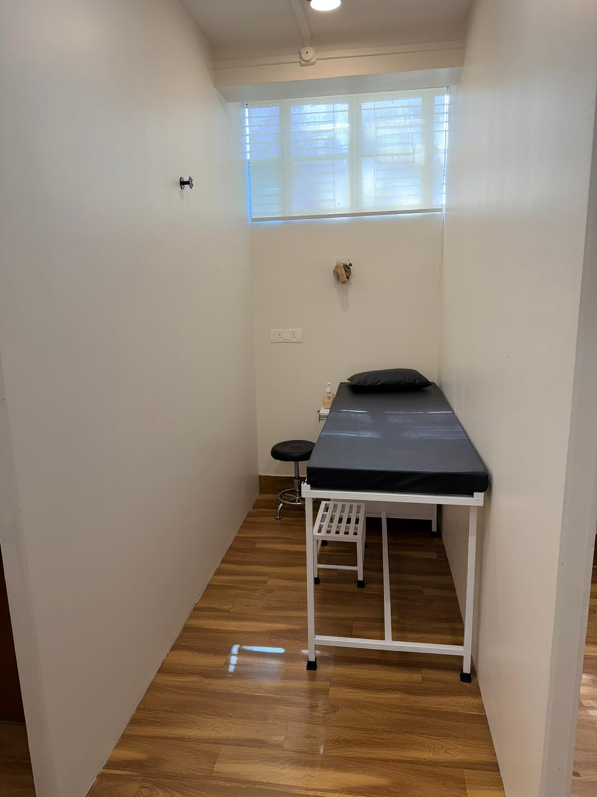
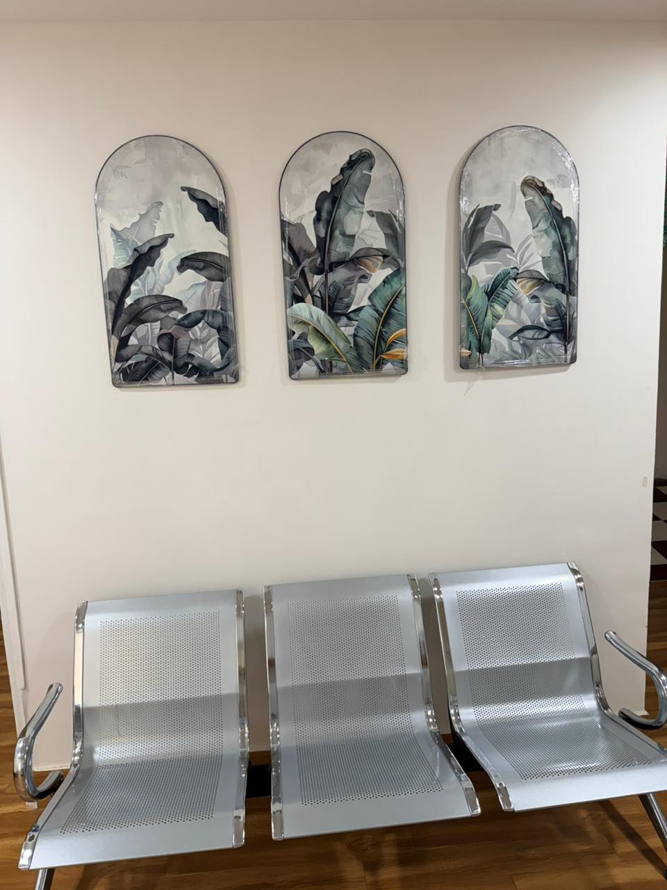

◎
Post-operative rehabilitation
Safe, guided recovery to restore full function after surgery.
Infinite PhysioCare is a modern, patient-focused physiotherapy and rehabilitation clinic dedicated to restoring movement, relieving pain, and enhancing performance. We combine evidence-based treatments with advanced techniques including manual therapy, dry needling, and functional training to deliver personalized care.
A space designed for healing, trust, and personalized physiotherapy at its best.
What began as a passion for helping people move pain-free has grown into a complete rehab and fitness space, delivering personalized care, empowering patients, and guiding every individual from injury to strength and confidence.
Founded to bridge the gap between recovery and performance, Infinite PhysioCare grew into a complete rehab and fitness space that guides every individual from injury to strength.
Personalized care plans for each body, sport, and recovery stage.
Fully equipped rehab and strength training setup.
A seamless journey from pain relief to peak performance.







Safe, guided recovery to restore full function after surgery.
Diagnosis and tailored treatment plans to alleviate chronic joint pain.
Comprehensive care for soft tissue tear and fractures.
Expert return-to-sport programs for all athletic levels.
Personalised training to build strength, resilience, and power.
Latest modalities and hands-on therapy for better outcomes.
BPTh. MSc Sports Science
Dr. Aboli Pedgaonkar is a highly skilled Physiotherapist and Sports Scientist committed to helping individuals overcome pain, restore movement, and achieve optimal physical performance. With a strong foundation in both clinical physiotherapy and sports science, she adopts a comprehensive, performance-oriented approach to rehabilitation and fitness.
She specializes in musculoskeletal rehabilitation, sports injury management, post-operative recovery, and strength & conditioning. Her treatment philosophy is rooted in evidence-based practice, integrating advanced manual therapy techniques with corrective exercise and functional training to deliver effective, long-lasting outcomes.
Dr. Aboli works extensively with athletes as well as the general population, focusing not only on recovery but also on injury prevention and performance enhancement. Her expertise in biomechanics and movement analysis enables her to identify the root cause of dysfunction and design highly personalized rehabilitation programs.
In addition to her core expertise, she is certified in dry needling, kinesio taping, cupping therapy, manual therapy, Pilates instruction, aerobic training, and clinical nutrition. This multidisciplinary skill set allows her to provide holistic care tailored to each individual’s needs. With a patient-centered approach, Dr. Aboli is dedicated to guiding every individual through their journey—from pain relief to peak performance—ensuring they move better, feel stronger, and live healthier.
“The treatment was very nice and main part of it is that aboli mam is personally focuses on each patient individually. Clinic has amazing gym and treatment rooms with all advance facilities ”
“I had been experiencing severe pain in my left arm for about three to four months, which was causing me a lot of discomfort. I endured it for that time but felt it needed treatment to avoid lifelong issues. My doctor suggested consulting a physiotherapist, and after searching on Google, I approached Infinite physiocare (Physiotherapist) Upon arrival, Doctors Shubham and Aboli provided an excellent diagnosis, confirming a muscle tear, and set up an exercise routine for my treatment. Although there wasn't much difference in the first two days, over the next three to four days, my pain was reduced by at least 80 percent, and it continued to subside gradually. I continued this therapy at the clinic for about eight to ten days, after which the doctor instructed me to do home exercises. I still had 20 percent of the pain remaining, but after doing the exercises at home for 20 days, my pain was completely gone. I truly appreciate the doctors for their excellent diagnosis and for completely eliminating my pain. I am very grateful to them.”
“I am Dr.Bhagyashree Chavan ,I really like the way Dr.Aboli mam trained me excluding all the medications ,I was in so much of pain earlier now am 98% better with my MRI reports indicating L4-L5 disc bulge, also liked there faculties ,gym and her concern for her patient they explained me everything so well ,looking forward to more sessions with her❣️”
“ I would like to express my heartfelt gratitude to Dr. Aboli Pedgaonkar for the exceptional care and treatment she provided for my muscle and knee pain. For the past four months, I had been struggling with severe pain that made it difficult for me to climb stairs or even walk properly. However, after following the exercises and therapy suggested by Dr. Aboli, I experienced remarkable improvement. Within just three days of treatment, I was able to return to my normal routine—without taking a single tablet for knee or muscle pain. Now, after 12 days, I am comfortably managing my daily activities and have even resumed running, completing a 16 km run without pain. Infinite Physio Care Centre is truly outstanding. The centre is equipped with advanced technology and modern strength-training equipment that specifically targets the affected areas. The ambience of the centre is extremely soothing—the aesthetic design and colour combination instantly create a calming effect, almost like a form of colour therapy. Before beginning the treatment, Dr. Aboli carefully examined my condition to identify the exact area that needed attention. She then guided me step-by-step through the entire course of treatment with great care and professionalism. Thank you so much, Dr. Aboli, for your guidance, exercises, and the valuable lifestyle suggestions you shared. Your dedication and expertise have made a significant difference in my recovery.”
“ I had a fracture in my tibia and fibula, and I’m extremely grateful for the care and support I received from Dr. Aboli Pedgaokar. She provided home visit sessions. Her approach was not only professional but also very polite, patient, and encouraging. She constantly motivated me to push my limits safely, which helped me regain strength and mobility much faster than I expected. Thanks to her dedication and expertise, my recovery was smooth and quicker. I highly recommend her to anyone in need of physiotherapy.”
“Well equipped center,along with supportive staff for the help had the best the experience would highly recommend”
10:00 AM – 2:00 PM and 5:00 PM – 9:00 PM. Call or book online to reserve a visit.